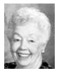
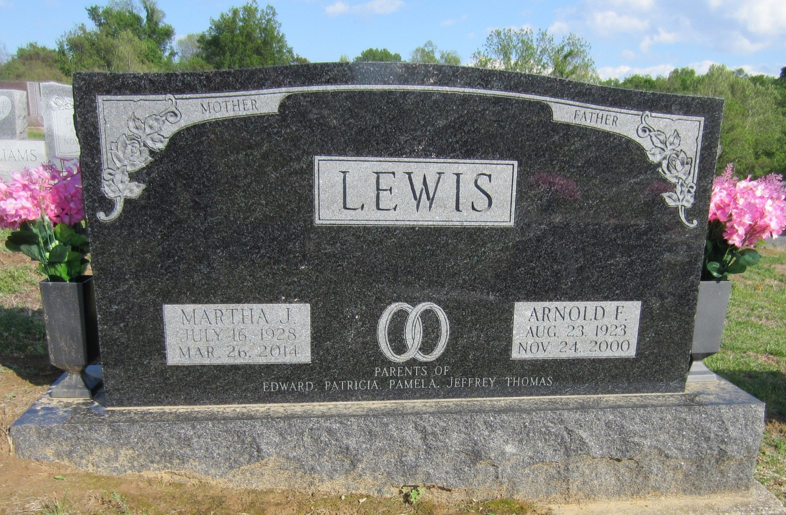

Martha (Sullivan) Lewis
16 July 1928 – 26 March 2014
Quick Facts
Immediate Family
Spouses
- Arnold Lewis (married 16 May 1947, per obituary)
Children
- Edward A. Lewis Sr.
- Patricia Dominick
- Pamela Embick
- Jeffery Lewis
- Thomas Lewis
Siblings
- Mary Jane Schuab
- Dorothy Sullivan
- Matthew Edward Sullivan Jr.
- James S. Sullivan
- Robert J. Sullivan
- Dan J. Sullivan
- Jo Ann Graham
- Elizabeth Wright
Family Relationship Notes
Martha’s 2014 obituary identifies her as Martha J. Lewis, née Sullivan, born in St. Louis on 16 July 1928; it names her parents Matthew and Lena, née Spencer, Sullivan, gives her marriage to Arnold Lewis as 16 May 1947, and lists their five children and her eight siblings. Arnold’s 2000 clipping directly identifies Arnold F. Lewis, born in Lesterville, as her husband and names the same children. Together they establish the couple’s identity and family group.
The 1950 NARA census image directly records Matthew E. and Lena O. Sullivan in Lesterville Township with Daniel G. (18) and Joann (16). These may correspond to obituary-listed siblings Dan J. Sullivan and Jo Ann Graham, but initials and married surname differ; the two source forms remain distinct pending a bridge.
Find a Grave memorial 126988421 gives Martha’s matching birth and death dates and Saint John Cemetery burial, and its photograph is the shared Arnold–Martha family marker. The marker names their five children. The small portrait on the Legacy obituary page is an actual obituary portrait, while the Find a Grave image is a grave photograph.
Her son Edward’s 2024 obituary names Arnold and Martha (Sullivan) Lewis of Lesterville as parents. The separate “Marge/Margie” versus “Gloria” spouse discrepancy about Edward remains unresolved and was not changed.
On Family Tree Sites
No independently verified tree profile is linked.
Couple Folder
Life Timeline
16 Jul 1928
Born in St. Louis, Missouri.
16 May 1947
Married Arnold Lewis.
20 years
Retired from Collinsville Unit 10 School District after 20 years of service.
26 Mar 2014
Died at Liberty Village Nursing Home in Maryville, Illinois.
29 Mar 2014
Funeral service at Herr Funeral Home; burial reported at St. John Cemetery, Collinsville.
Life Story
Martha grew up in the Sullivan family of Lesterville and was born in St. Louis in 1928. She married Arnold Lewis in 1947. The 2014 obituary lists their five children and names eight siblings. She later lived in Collinsville, retired after 20 years with Collinsville Unit 10 School District, and died in Maryville, Illinois, in 2014. Her obituary reports burial at St. John Cemetery in Collinsville.
Photo Gallery


Sources and Evidence
- Martha Lewis obituary, Belleville News-Democrat via Legacy, published 27 March 2014. This is the principal source for her vital facts, parents, marriage, children, siblings, occupation, church, and burial.
- 1950 U.S. Census, Reynolds County, Missouri, ED 90-5, sheet 4 (NARA image): Matthew E. Sullivan, Lena O. Sullivan, son Daniel G. (18) and daughter Joann (16). Original image reviewed directly.
- FamilySearch 1950 census index search for Matthew Sullivan / Lena: indexes this same couple with Daniel G. (18) and Joann (16); index only.
- Edward Arnold Lewis Sr. funeral-home obituary, 2024: names Arnold and Martha (Sullivan) Lewis of Lesterville as parents of the subject; same obituary as the Legacy copy, not an independent second notice.
- Find a Grave memorial for Martha Jean Sullivan Lewis: same dates/cemetery and shared Arnold–Martha marker.
- Legacy-rehosted Belleville News-Democrat obituary page: includes Martha’s low-resolution portrait and full family obituary.

Person Archive
Browse the records, source notes, photos, and clippings saved for this person in the American Bloodline archive.
Research Notes and Open Questions
- The obituary spells one deceased sister’s surname “Schuab”; preserve that published spelling unless an independent record supports a correction.
- The census lists Daniel G. and Joann as children in Matthew and Lena’s household; Martha’s obituary names siblings Dan J. Sullivan and Jo Ann Graham. These may be the same people, but do not merge the source forms yet.
- A low-resolution portrait of Martha is present on her 2014 Legacy obituary. Find a Grave’s single photo is the shared Arnold–Martha marker, not an individual portrait. Both are now archived and credited. No separate family snapshot was found in these sources.
- The 2024 Edward obituary and 2014 Martha obituary agree on Edward’s parents, but his spouse discrepancy remains unresolved.
DNA
No DNA matches linked yet.
Family Notes
No Family Notes link is listed on this profile.
Profile updated 24 November 2026 with obituary and original 1950 census review. Existing family assignments and folder link preserved.